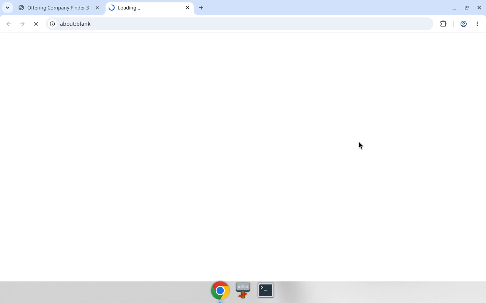
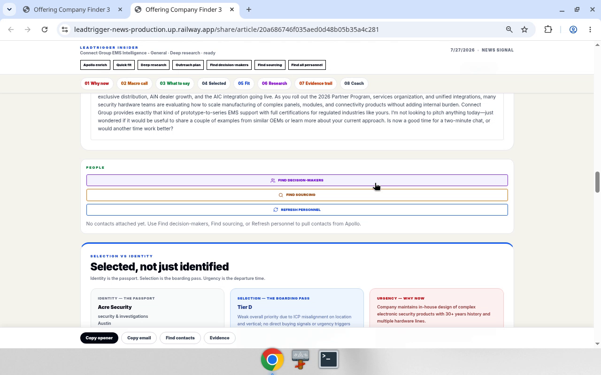

Goal: From Offering Company Finder → companies with articles → open share article → run Deep research (many briefs are stale).
Canonical paths
| Step | Route / control |
|---|---|
| Hub | /companies/start |
| With articles | /companies?article=with |
| Share | /share/article/{articleKey} via Open on new page |
| Enrich | Toolbar Deep research (stage: deep_research) |
Decision rules
- If content / scores look old or wrong-sector → Deep research before outreach/copy.
- Watchlist filter =
campaignBrain.listBrainCampaigns→campaignId. - CG class UI =
cgLeadClass(demo: All). - Trust history URL
/companies?article=with— never/companies/article-with.
Inputs vs constants (demo)
| Kind | Name | Demo |
|---|---|---|
| INPUT | {watchlist} |
S8 |
| INPUT | {company} |
Aceros Moldeados de Lacunza SA |
| INPUT | {articleKey} |
08421b9c8af111dc214cffcdd564b8f6 |
| SESSION | venture | Connect Group EMS Intelligence |
| CONST | base | https://leadtrigger-news-production.up.railway.app |
Bot sequence
- Open
/companies/start. - Click 1 Companies with articles →
/companies?article=with. - Set Watchlist =
{watchlist}. - Optional: CG class = All.
- Save filtered (up to 500).
- On
{company}, Open on new page →/share/article/{articleKey}. - Click Deep research; wait until idle / toast complete.
- Report: company,
articleKey, research status.
Anti-patterns
- Skip Deep research on stale briefs.
- Invent
articleKey. - Run Find contacts / Outreach unless asked.
- Treat video OCR paths as canonical when history disagrees.
Media


Full step MANUAL: media/01-refresh-stale-share-article/MANUAL.md
Related crawlable pages: Step MANUAL · Hub · Appendix